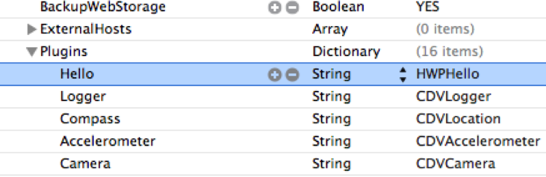

Developing PhoneGap Apps
MobilePhilly 12/6/12
Don Coleman
Chariot Solutions
@doncoleman
PhoneGap is an open source solution for building cross-platform mobile apps with standards-based Web technologies like HTML, JavaScript, CSS.
Cordova
vs
PhoneGap
Supports Many Platforms
iOS, Android
Windows Phone, Blackberry
Symbian, Bada, WebOS
Tizen, Chrome, Windows 8
Embeds a web view in a native app
JavaScript API
Access Device Features
- Accelerometer
- Camera
- Capture
- Compass
- Connection
- Contacts
- Device
- Events
- File
- Geolocation
- Globalization
- Media
- Notification
- Storage
http://phonegap.com/about/feature
Your app is a native app
Does not provide a UI
Can I wrap any website in PhoneGap and magically have a mobile app?
NO!
Single Page App
Camera
navigator.camera.getPicture(
cameraSuccess, cameraError, [ cameraOptions ] );
API Call
navigator.camera.getPicture(
onSuccess,
onFailure,
{
quality: 50,
destinationType: Camera.DestinationType.FILE_URI
}
);
Callbacks
function onSuccess(imageURI) {
var image = document.getElementById('myImage');
image.src = imageURI;
}
function onFailure(message) {
alert('Failed because: ' + message);
}
Permissions
<uses-permission
android:name="android.permission.WRITE_EXTERNAL_STORAGE" />
Download
http://phonegap.com/downloadUnzip archive
move somewhere like /usr/local/phonegap-2.2.0
Do you have platform tools installed?
Xcode
Android SDK
Visual Studio
Demo
iOS
$ cd /usr/local/phonegap-2.2.0
$ cd lib/ios/bin
$ ./create ~/foo com.example.foo Foo
$ cd ~/foo
$ ./cordova/emulate
(edit www/index.html)
$ ./cordova/debug && ./cordova/emulate

Android
$ cd /usr/local/phonegap-2.2.0
$ cd lib/android/bin
$ ./create ~/foo com.example.foo Foo
$ cd ~/foo
$ ./cordova/emulate
(choose an emulator)
(wait for a *long* time)
(keep waiting)
$ ./cordova/BOOM


PhoneGap Getting Started Guides
http://docs.phonegap.com/en/2.2.0/guide_getting-started_index.md.html
index.html
<!DOCTYPE html>
<html>
...
<script src="cordova-2.2.0.js"></script>
<script src="js/index.js"></script>
<script type="text/javascript">
app.initialize();
</script>
</body>
</html>
index.js
var app = {
initialize: function() {
this.bindEvents();
},
bindEvents: function() {
document.addEventListener(
'deviceready', this.onDeviceReady, false);
},
onDeviceReady: function() {
// your code here
}
};
What APIs are there?
http://docs.phonegap.com/en/2.2.0/index.htmlPlugins
Extend PhoneGap
JavaScript to Native Bridge
cordova.exec(successCallback,
failureCallback,
service,
action,
args)
Hello World Plugin
http://github.com/don/cordova-plugin-helloJavaScript
var service = "Hello",
action = "greet",
args = ["World"];
cordova.exec(success, failure,
service, action, args);
var success = function (result) {
alert (result);
}
var failure = function (error) {
alert ("Error " + error)
}
var greet = function (name, success, failure) {
cordova.exec(success, failure,
"Hello", "greet", [name]);
}
greet("World", success, failure);
cordova.define("cordova/plugin/hello",
function (require, exports, module) {
var exec = require('cordova/exec');
function greet(name, win, fail) {
exec(win, fail, "Hello",
"greet", [name]);
}
module.exports = {
greet: greet
}
}
);
var hello = cordova.require('cordova/plugin/hello');
var success = function (result) {
alert(result);
},
failure = function (error) {
alert("ERROR " + error);
};
hello.greet("World", success, failure);
Android
public class Hello extends CordovaPlugin {
public boolean execute(String action, JSONArray data, CallbackContext callbackContext) throws JSONException {
if (action.equals("greet")) {
String name = data.getString(0);
String message = "Hello, " + name;
callbackContext.success(message);
return true;
} else {
return false;
}
}
}
config.xml
<?xml version="1.0" encoding="utf-8"?>
<cordova>
<plugins>
<plugin name="App" value="org.apache.cordova.App"/>
<plugin name="Camera"
value="org.apache.cordova.CameraLauncher"/>
<!-- ... -->
<plugin name="Hello" value="com.example.plugin.Hello"/>
</plugins>
</cordova>
iOS
#import <Cordova/CDVPlugin.h>
@interface HWPHello : CDVPlugin
- (void) greet:(CDVInvokedUrlCommand*)command;
@end
#import "HWPHello.h"
@implementation HWPHello
- (void)greet:(CDVInvokedUrlCommand*)command
{
NSString* callbackId = [command callbackId];
NSString* name = [[command arguments] objectAtIndex:0];
NSString* msg = [NSString stringWithFormat:@"Hello, %@", name];
CDVPluginResult* result = [CDVPluginResult
resultWithStatus:CDVCommandStatus_OK
messageAsString:msg];
[self success:result callbackId:callbackId];
}
@end
Cordova.plist
pluginstall
https://github.com/alunny/pluginstallPlugin Specification
https://github.com/alunny/cordova-plugin-spec
$ pluginstall
Usage:
pluginstall [platform] [project directory] [plugin directory]
$ pluginstall android /tmp/foo ~/cordova-plugin-hello
plugin installed
More details about using pluginstall
Chariot Solutions BlogRipple
http://emulate.phonegap.comWeinre
http://debug.phonegap.com

Other ways to debug
PhoneGap Build
http://build.phonegap.com/
Sample Application
https://github.com/phonegap/phonegap-start

Questions?
Thank You
Don Coleman
Chariot Solutions
don@chariotsolutions.com@doncoleman